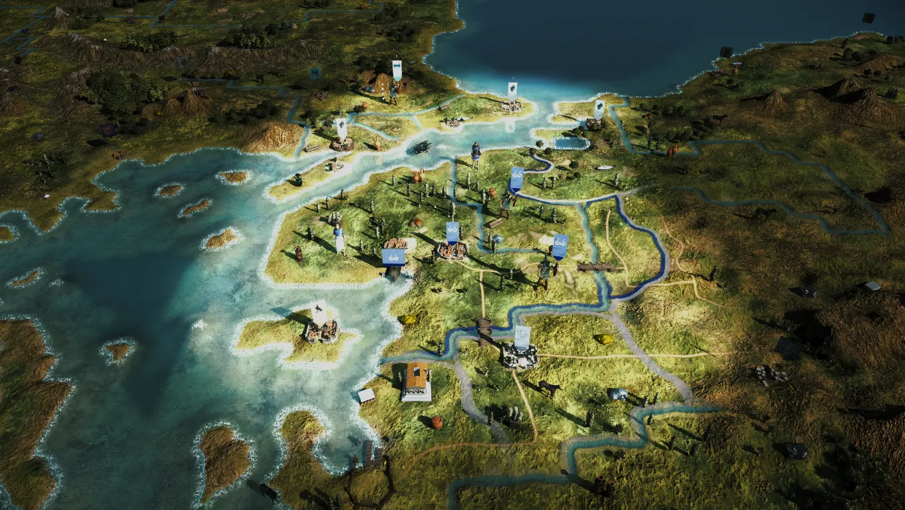
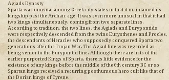
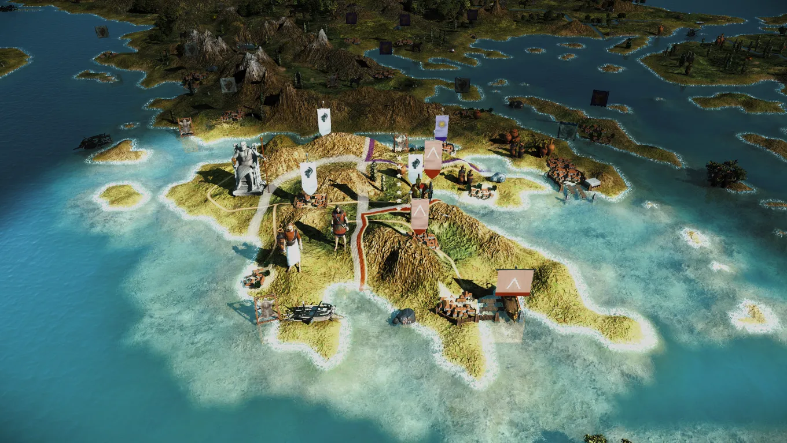
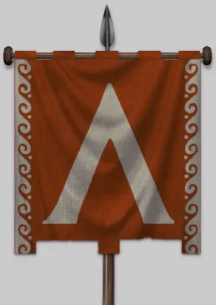
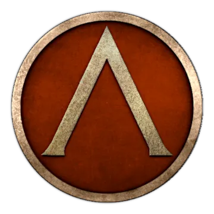

RTR: Imperium Surrectum
RTR: Imperium SurrectumSparta
2021-12-01 · Tarnholm

"Stranger, tell the Spartans that here we lie, obedient to their laws." – (Epigram at Thermopylai)
In times immemorial, there was only Chaos. From Chaos came Earth, Gaia. And on Gaia, there was only the rock. The rock, the sand and the water. Prometheus mixed rock, sand and water into mud, and out of mud he created man. He gave us the fire, but his deed also led to Pandora releasing all the evils of the cosmos into the realms of the mortals. Ever since, man has suffered. Eurotas suffered, when he overcame the river. Klete suffered, when she gave birth to Sparte. Sparte married Lakedaimon, and he suffered much, too, when he undertook the arduous task of building a city. Yet building a city he did, and we proudly call it both Lakedaimon and Sparte even today.
Years passed, men died, men were born, but the rock always stayed. The Eurotas was still running through the green lands of Lakonia and the Taygetos guarded our lands, when Helena, the daughter of glorious Menelaos, was stolen by the Trojans. The Trojans were punished, but so were the Atrides, for suffering is the fate of man. The scions of the immortal Herakles suffered, when they came into the valley of the Eurotas to win Lakedaimon. On their great wandering, these Dorians had to bear many an evil, but they cleansed this land with their blood and made it holy. Eurysthenes and Prokles, wise and proud, came together to rule our lands, and ever since the sacred houses of the Eurypontids and Agiad have given us kings.
As time flowed by, the water of the Eurotas cut the rock, deeper, and deeper, and in the shadow of the Taygetos we Lakedaimonians became the foremost men of Hellas. Lakonia was ours, and the Messenian cowards were punished for their impudence. The Gods made us their masters, and their masters we shall always be. Many tried to challenge us: We put the monstrous Argives in their place, and we saved Hellas from the tyranny of the Athenians. Yet there was no greater glory than that which befell Leonidas and his men: They died for their and our freedom and the freedom of all Greeks from time immemorial to a distant future no one but the Pythia can foresee. They suffered, but their reward exceeded everything men can imagine: For what greater prize is there than the freedom to live in Elysion, and the sure knowledge to have secured the freedom of the mortals, to be remembered for generations, if not until the end of days? Long live Leonidas and his memory, long live the two hundred ninety seven men who fell with him. May Aphrodite praise the victors of Plataiai, those who saved Hellas from the tyranny of the Barbarians!
Yet, the fate of men is to suffer, and because of our strength, our victories and our most excellent way of life, the Moirai envied our glory. They sent the lowly Thebans, worthless creatures who once betrayed the Hellenes to the Barbarians, imitators of Ephialtes, to make us suffer the greatest of evils. Having destroyed our armies, the impertinent Epaminondas, servant of Hades, put two thorns in our sides: Messene and Megalopolis are their names, and if Lakedaimon shall return to its former glory, they must be destroyed: From rock and sand they were made, rock and sand they shall once more become.
After the shameful Thebans came the goatherd Alexander, and once more we were betrayed – oh cruel Moirai, what have we done to deserve this fate? Now Lakedaimon is but a shadow of its former self. The slavish Messenians are free, but freedom is not meant for lowly beasts like them. The Barbarians from the North still stand strong, heirs of the boy king Alexander, but their infightings will bring about their downfall, Tyche be my witness. On the island of Pelops, the children of Achaia rise up, whilst the Arkadians watch us with scorning views from their fortress of Megalopolis, this insult to our name. Once proud Korinthos, our friend and enemy on many occasions, is now but a slave of the Barbarians. Rumour has it even the Helots in Lakonia are getting bolder by the day. Is the end near? Or will we save Lakedaimon? Are the Kings capable? Will Sparte return to its ancient form, or should we even consider adapting to the new world out there? The fate of Lakedaimon lies in your hands! Only one thing is sure: Suffer you will, and if you fail or succeed: The rock of the Taygetos, the sand of Lakonia and the water of the Eurotas will be there to witness it all…"
Hello and welcome back to our 8th Developer Diary. Let me tell you this one is about something you all have been waiting for.
Without further ado let me present to you our latest addition. Sparta!
RIS 0.3.0 is going to include the heroes of Thermopyle, but this isn't the Sparta of the olden days where they dominated Greek warfare on land. At our mod's start, Sparta is far away from its glory days. In 270 BC, Sparta is under the guidance of King Areus I and experiencing a bit of a cultural renaissance.
The alliance with Athens (Greeks City States) and the Ptolemies is promising and helpful against the Macedonian threat. Playing as Sparta you will have virtually no cavalry, start with one city, and face the mighty Antigonid Kingdom on your doorsteps. You also share the Peloponnese with minor Greek states to contend with and if you can get past them, you might eventually have to deal with the legions of Rome and the barbarians from the north!
Sparta has a few unique features:
- Generals Bodyguards are a hoplite unit, not cavalry
- Hoplites dominate your roster
- Virtually no cavalry at all to recruit
- Some interesting traits depicting the Spartan political system at the time
We hope you enjoy the challenge!




Once again we have some new icons and banners, unique campaign models as and some special traits. There are also plenty of new descriptions. Here is one of them:
The Perioikoi Hoplitai were important soldiery in Spartan armies, forming a majority of the line infantry in the famous Spartan phalanx.
The principal weapon of the hoplite was the thrusting spear (dory), eight to nine feet long, with an ash or cornel wood shaft, iron head, and an iron or bronze buttspike. The centre of the shaft was bound with cord for a secure grip. The spear was usually used in an overarm thrust, but it could also be thrust underarm or even thrown. The secondary weapon of the hoplite was the sword, about 60 cm long.
The “Argive” shield (called aspis or hoplon) was large, 80 cm-1 meter in diameter, convex, made of wood covered with a thin bronze sheet, and was carried with two handles, a bronze porpax in the centre through which the forearm passes, and a cord antilabe at the rim. Hoplites commonly wore greaves, clipped around the legs by their own elasticity, wore bronze helmets with cheek-pieces and horsehair crests.
Hoplites formed up into a formation on a frontage of about 3 feet per man, with each man’s right protected by his neighbours projecting shield. Hoplites most commonly fought in multiples of four ranks deep, usually eight, though 4, 12 and 16 was also common. In this formation, the hoplites found mutual protection from an accumulation of shields to their front, rear and side. Normally a phalanx of hoplites would advance directly in front of their enemy, breaking into a run for the last few yards, seeking to close as fast as possible to minimise missile casualties. Ancient Greek battle was a terrible collision of hoplites on the run. What followed this initial collision was the push, or othismos, as ranks to the rear put their bodies into the hollows of their shields and forced those ahead constantly forwards. The hoplite phalanx was vulnerable to flanking attacks, and if the hoplite formation was dispersed or broken then the hoplites are at a great disadvantage. If surrounded or vulnerable to surprise attacks, hoplites would form a hollow square, with baggage, camp-followers and light troops in the centre.
HISTORICAL BACKGROUND
In Sparta the body of full citizens – the famous homoioi (the “equals”), the Spartiate warriors whose business was national defence, and who lived off the produce of their serf-worked estates – had declined from an original (mid-seventh century BC) figure of some eight or nine thousand to no more than 700 men by 244 BC. By the third century BC the Spartiates had evolved into an elite caste of ultra-conservative landowners into whose hands had fallen the best of the land and a vast preponderance of wealth – a very different picture from the famous 300 warriors who had defied the Persians at Thermopylae. The Spartiates ruled over a population comprised of tens of thousands of non-citizen freedmen (perioikoi), resident aliens (metics) and oppressed serfs (helots) – none of whom had the rights of citizens.
The Perioikoi or "dwellers around" were free men of Sparta, mainly farmers and merchants who lacked the full citizenship of the Spartiates. They lived in perhaps 80 or 100 towns and villages, in the less fertile land of the hills and coasts. They may have been part of the conquered people, but unlike the helots, they kept their freedom. Increasingly, during the fourth and third centuries BC, the Spartans made use of the Perioikoi to bolster the size of their phalanx."
So there you have it. Sparta our 20th faction. Hope you all enjoyed it.